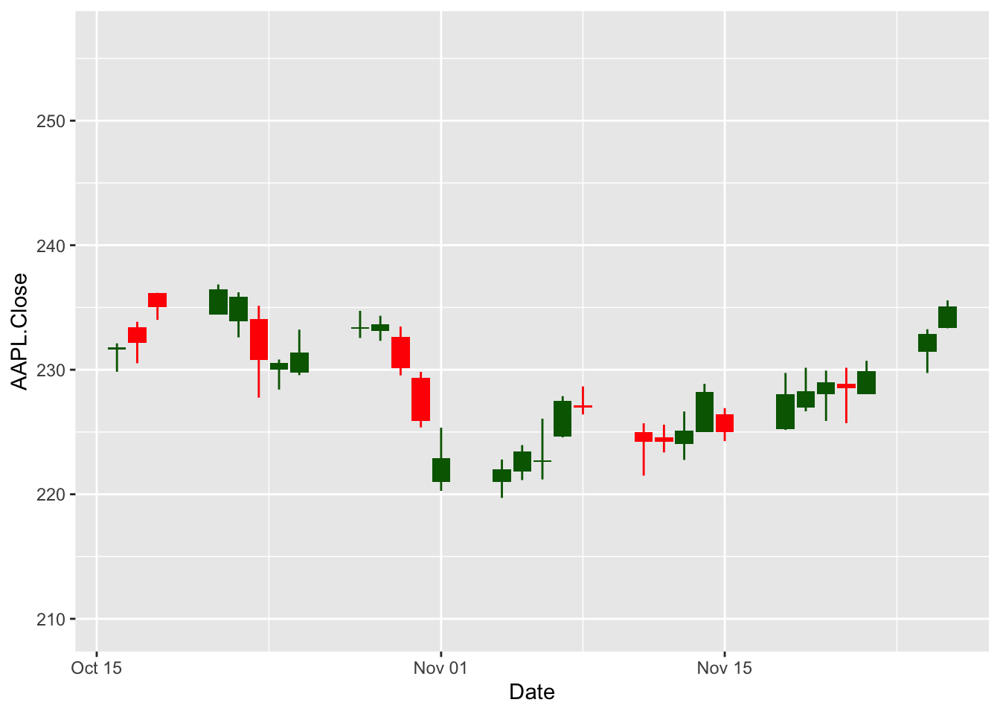

## call libraries
library(ggplot2)
library(tidyquant)
library(quantmod)
library(plotly)How to draw a candlestick chart in R- Both ggplot2 and plotly
Candlestick charts are a type of financial chart used to depict the price movements of an asset over a specific period. Each “candlestick” represents a time frame—such as a day, hour, or minute—and displays four key pieces of data: the opening price, closing price, highest price, and lowest price within that period. The body of the candlestick shows the range between the opening and closing prices, while the wicks (also known as shadows) extend to the highest and lowest prices. If the closing price is higher than the opening price, the candlestick is typically colored green or left hollow to indicate a price increase. Conversely, if the closing price is lower than the opening price, it is colored red or filled to signify a price decrease.
Here you can see a disclosure for the figures in the candlestick chart.

Candlestick charts are valuable tools for traders and analysts because they provide a visual representation of market sentiment and price action. By analyzing patterns and formations—such as dojis, hammers, and engulfing patterns—traders can gain insights into potential trend reversals or continuations. These patterns help in making informed decisions about when to enter or exit trades. Understanding how to read and interpret candlestick charts is essential for anyone looking to navigate the financial markets effectively.
In this tutorial, I aim to illustrate how you can construct a candlestick chart in R by using ggplot2 and plotly libraries, separetely. The ggplot2 library is a popular data visualization package that allows you to create a wide range of plots, while the plotly library enables you to create interactive charts that can be easily shared and explored.
Thus, we need to employ four packages first. tidyquant, quantmod, ggplot2, and plotly. The quantmod package is used to retrieve financial data from Yahoo Finance, while the plotly package is used to create static and interactive candlestick charts, respectively.
tidyquant package has a built-in function used to create a candlestick chart as a ggplot object, geom_candlestick.
Constructing a candlestick chart with ggplot2
After calling the libraries, we can retrieve the historical stock prices of a company from Yahoo Finance using the getSymbols() function from the quantmod package. In this example, we will retrieve the historical stock prices of Apple Inc. (AAPL) and store them in a data frame.
## retrieve historical stock prices
getSymbols("AAPL", src = "yahoo")[1] "AAPL"Next, we will create a data frame from the stock prices and select the last 30 observations to create a candlestick chart. The geom_candlestick() function from the tidyquant package is used to create the candlestick chart.
df <- data.frame(Date=index(AAPL),coredata(AAPL)) |> tail (30)
head(df) Date AAPL.Open AAPL.High AAPL.Low AAPL.Close AAPL.Volume
4478 2024-10-16 231.60 232.12 229.84 231.78 34082200
4479 2024-10-17 233.43 233.85 230.52 232.15 32993800
4480 2024-10-18 236.18 236.18 234.01 235.00 46431500
4481 2024-10-21 234.45 236.85 234.45 236.48 36254500
4482 2024-10-22 233.89 236.22 232.60 235.86 38846600
4483 2024-10-23 234.08 235.14 227.76 230.76 52287000
AAPL.Adjusted
4478 231.5253
4479 231.8949
4480 234.7417
4481 236.2201
4482 235.6008
4483 230.5064## create a candlestick chart
df |> ggplot(aes(x = Date, y = AAPL.Close)) +
geom_candlestick(aes(open = AAPL.Open, high = AAPL.High, low = AAPL.Low, close = AAPL.Close))+
coord_x_date(xlim = c(min(df$Date), max(df$Date)),
ylim = c(min(df$AAPL.Low)-10, max(df$AAPL.Close)+20))This R code generates a candlestick chart of Apple’s stock prices using the ggplot2 library, enhanced with a function like geom_candlestick() from the tidyquant package. It starts by piping the data frame df into ggplot(), mapping the x-axis to Date and the y-axis to AAPL.Close. The geom_candlestick() layer is added to visualize the open, high, low, and close prices of the stock over time, using the respective columns in df. Finally, coord_x_date() adjusts the x-axis to cover the full date range of the data and sets the y-axis limits slightly beyond the minimum and maximum stock prices (subtracting 10 from the lowest low and adding 20 to the highest close) to provide padding for better visualization.
However, the produced chart is slightly different than the usual one because of the default color settings. We can change the color settings by adding the following arguments to the geom_candlestick() function:
## create a candlestick chart
df |> ggplot(aes(x = Date, y = AAPL.Close)) +
geom_candlestick(aes(open = AAPL.Open, high = AAPL.High, low = AAPL.Low, close = AAPL.Close),colour_up = "darkgreen",fill_up = "darkgreen")+
coord_x_date(xlim = c(min(df$Date), max(df$Date)),
ylim = c(min(df$AAPL.Low)-10, max(df$AAPL.Close)+20))
Since it is a ggplot object, you can manipulate this chart by editing its theme, adding titles or labels, or changing the color scheme. You can also save the chart as an image file or embed it in an R Markdown document or Shiny application.
## create a candlestick chart
df |> ggplot(aes(x = Date, y = AAPL.Close)) +
geom_candlestick(aes(open = AAPL.Open, high = AAPL.High, low = AAPL.Low, close = AAPL.Close),colour_up = "darkgreen",fill_up = "darkgreen")+
coord_x_date(xlim = c(min(df$Date), max(df$Date)),
ylim = c(min(df$AAPL.Low)-10, max(df$AAPL.Close)+20)) +
labs(title =paste("Apple Inc. (AAPL) Stock Prices Between",min(df$Date),"and",max(df$Date)) , x = "Date", y = "Price") Warning: The following aesthetics were dropped during statistical transformation: open,
high, low, close, y
ℹ This can happen when ggplot fails to infer the correct grouping structure in
the data.
ℹ Did you forget to specify a `group` aesthetic or to convert a numerical
variable into a factor?Warning: The following aesthetics were dropped during statistical transformation: x,
open, high, low, close, y
ℹ This can happen when ggplot fails to infer the correct grouping structure in
the data.
ℹ Did you forget to specify a `group` aesthetic or to convert a numerical
variable into a factor?Constructing a candlestick chart with plotly
As stated below, plotly is a powerful library that allows you to create interactive charts in R. In this example, we will use the plot_ly() function to create an interactive candlestick chart of Apple’s stock prices. The plot_ly() function takes the data frame df as input and specifies the x-axis as Date and the y-axis as the open, close, high, and low prices of the stock. The type argument is set to “candlestick” to create a candlestick chart, and the layout() function is used to add a title to the chart.
fig <- df %>% plot_ly(x = ~Date, type="candlestick",
open = ~AAPL.Open, close = ~AAPL.Close,
high = ~AAPL.High, low = ~AAPL.Low)
fig <- fig %>% layout(title = paste("Apple Inc. (AAPL) Stock Prices Between",min(df$Date),"and",max(df$Date)))
figThis R code generates an interactive candlestick chart of Apple’s stock prices using the plotly library. It starts by piping the data frame df into the plot_ly() function, specifying the x-axis as Date and the y-axis as the open, close, high, and low prices of the stock. The type argument is set to “candlestick” to create a candlestick chart, and the layout() function is used to add a title to the chart. The resulting chart is interactive, allowing you to zoom in, pan, and hover over data points to view additional information.
You can visit the official documentation of the plotly library to learn more about creating interactive candlestick charts and customizing their appearance and behavior.
For any questions or feedback please feel free to reach out to me via e-mail.